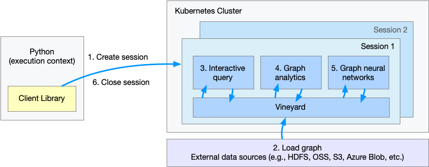
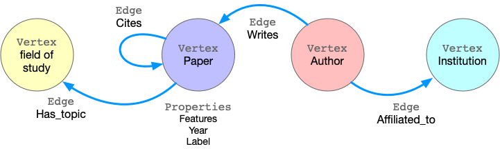

Getting Started¶
graphscope is the Python client for GraphScope, a one-stop graph computation system to process interactive queries, analytical jobs and graph learning. It featured with ease-of-use, high-performance and the scalability to evaluate graph computations over extremely large graphs.
This guide takes a walk-through for the graphscope. We use a concrete example to illustrate how GraphScope can be used by data scientists to effectively analyze large graphs.
Example: Node clustering on Citation Network¶
ogbn-mag is a heterogeneous network composed of a subset of the Microsoft Academic Graph. It contains 4 types of entities(i.e., papers, authors, institutions, and fields of study), as well as four types of directed relations connecting two entities.
Given the heterogeneous ogbn-mag data, the prediction task is to predict the classification of each paper. Node clustering can group papers sharing the similar topics together, which identifies cooperations and trends in scientific groups. We apply the attribute and structural information to cluster similar papers together. In the graph, each paper node contains a 128-dimensional word2vec vector representing its content, which is obtained by averaging the embeddings of words in its title and abstract. The embeddings of individual words are pre-trained. The structural information is computed on-the-fly.
{kind=link}
The figure shows the flow of execution when a client Python program is executed..
Step 1. Create a session or workspace in GraphScope. Step 2. Define schema and load the graph. Step 3. Query graph data. Step 4. Run graph algorithms. Step 5. Run graph-based machine learing tasks. Step 6. Close the session.
Launching Session¶
To use GraphScope, we need to establish a Session in a python interpreter.
import os
import graphscope
# assume we mount `~/test_data` to `/testingdata` in pods.
k8s_volumes = {
"data": {
"type": "hostPath",
"field": {
"path": os.path.expanduser("~/test_data/"),
"type": "Directory"
},
"mounts": {
"mountPath": "/testingdata"
}
}
}
sess = graphscope.session(k8s_volumes=k8s_volumes)
For macOS, the session needs to establish with the LoadBalancer service type (which is NodePort by default).
sess = graphscope.session(k8s_volumes=k8s_volumes, k8s_service_type="LoadBalancer")
A Session tries to launch a coordinator, which is the entry for the back-end engines. The coordinator manages a cluster of resources (k8s pods), and the interactive/analytical/learning engines ran on them. For each pod in the cluster, there is a vineyard instance at service for distributed data in memory.
Loading Graph¶
GraphScope models graph data as property graph, in which the edges/vertices are labeled and have many properties. Taking ogbn-mag as example, the figure below shows the model of the property graph.
{kind=link}
This graph has fours kinds of vertices, labeled as Paper, Author, Institution and Field_of_study. There are four kinds of edges connecting them, each kind of edges has a label and specifies the vertex labels for its two ends. For example, Cites edges connect two vertices labeled Paper. Another example is Writes, it requires the source vertex is labeled Author and the destination is a Paper vertex. All the vertices and edges may have properties. e.g., Paper vertices have properties like features, publish year, subject label, etc.
To load this graph to GraphScope, one may use the code below.
g = sess.g()
g = (
g.add_vertices("paper.csv", label="paper")
.add_vertices("author.csv", label="author")
.add_vertices("institution.csv", label="institution")
.add_vertices("field_of_study.csv", label="field_of_study")
.add_edges(
"author_affiliated_with_institution.csv",
label="affiliated",
src_label="author",
dst_label="institution",
)
.add_edges(
"paper_has_topic_field_of_study.csv",
label="hasTopic",
src_label="paper",
dst_label="field_of_study",
)
.add_edges(
"paper_cites_paper.csv",
label="cites",
src_label="paper",
dst_label="paper",
)
.add_edges(
"author_writes_paper.csv",
label="writes",
src_label="author",
dst_label="paper",
)
)
Alternatively, we provide a function to load this graph for convenience.
from graphscope.dataset.ogbn_mag import load_ogbn_mag
g = load_ogbn_mag(sess, "/testingdata/ogbn_mag_small/")
Here, the g is loaded in parallel via vineyard and stored
in vineyard instances in the cluster managed by the session.
See more details in Loading Graphs
Interactive Query¶
Understanding diverse graph data is an essential prerequisite to effective analysis, and therefore it is very common for users to directly explore, examine, and present graph data in an interactive environment in order to locate specific information in time. GraphScope adopts a high-level language called Gremlin for graph traversal, and provides efficient execution at scale.
In this example, we use graph queries to find citation counts for a particular author, and to derive a subgraph by extracting publications in specific time out of the entire graph.
# get the entrypoint for submitting Gremlin queries on graph g.
interactive = sess.gremlin(g)
# check the total node_num and edge_num
node_num = interactive.execute("g.V().count()").one()
edge_num = interactive.execute("g.E().count()").one()
# count the number of papers two authors (with id 2 and 4307) have co-authored.
papers = interactive.execute("g.V().has('author', 'id', 2).out('writes')\
.where(__.in('writes').has('id', 4307)).count()").one()
Graph Analytics¶
Graph analytics is widely used in real world. Many algorithms, like community detection, paths and connectivity, centrality are proven to be very useful in various businesses. GraphScope ships with a set of built-in algorithms, enables users easily analysis their graph data.
Please note that many algorithms may only work on homogeneous graphs. To evaluate these algorithms over a property graph, you may want to project the property graph to a simple graph at first.
Continue our example, we run k-core decomposition and triangle counting to generate the structural features of each paper node.
# exact a subgraph of publication within a time range
sub_graph = interactive.subgraph("g.V().has('year', inside(2014, 2020)).outE('cites')")
# project the projected graph to simple graph.
simple_g = sub_graph.project(vertices={"paper": []}, edges={"cites": []})
ret1 = graphscope.kcore(simple_g, k=5)
ret2 = graphscope.triangle(simple_g)
# add the results as new columns to the citation graph
sub_graph = sub_graph.add_column(ret1, {"kcore": "r"})
sub_graph = sub_graph.add_column(ret2, {"tc": "r"})
In addition, users can write their own algorithms in GraphScope. Currently, GraphScope support users to write their own algorithms in PIE model and Pregel model.
Graph Neural Networks (GNNs)¶
Graph neural networks (GNNs) combines superiority of both graph analytics and machine learning. GNN algorithms can compress both structural and attribute information in a graph into low-dimensional embedding vectors on each node. These embeddings can be further fed into downstream machine learning tasks.
In our example, we train a GCN model to classify the nodes (papers) into 349 categories, each of which represents a venue (e.g. pre-print and conference). To achieve this, first we launch a learning engine and build a graph with features following the last step.
# define the features for learning
paper_features = []
for i in range(128):
paper_features.append("feat_" + str(i))
paper_features.append("kcore")
paper_features.append("tc")
# launch a learning engine.
lg = sess.learning(sub_graph, nodes=[("paper", paper_features)],
edges=[("paper", "cites", "paper")],
gen_labels=[
("train", "paper", 100, (0, 75)),
("val", "paper", 100, (75, 85)),
("test", "paper", 100, (85, 100))
])
Then we define the training and testing process, and run it.
from graphscope.learning.examples import GCN
from graphscope.learning.graphlearn.python.model.tf.trainer import LocalTFTrainer
from graphscope.learning.graphlearn.python.model.tf.optimizer import get_tf_optimizer
# supervised GCN.
def train(config, graph):
def model_fn():
return GCN(graph,
config["class_num"],
config["features_num"],
config["batch_size"],
val_batch_size=config["val_batch_size"],
test_batch_size=config["test_batch_size"],
categorical_attrs_desc=config["categorical_attrs_desc"],
hidden_dim=config["hidden_dim"],
in_drop_rate=config["in_drop_rate"],
neighs_num=config["neighs_num"],
hops_num=config["hops_num"],
node_type=config["node_type"],
edge_type=config["edge_type"],
full_graph_mode=config["full_graph_mode"])
trainer = LocalTFTrainer(model_fn,
epoch=config["epoch"],
optimizer=gl.get_tf_optimizer(
config["learning_algo"],
config["learning_rate"],
config["weight_decay"]))
trainer.train_and_evaluate()
config = {"class_num": 349, # output dimension
"features_num": 130, # 128 dimension + kcore + triangle count
"batch_size": 500,
"val_batch_size": 100,
"test_batch_size":100,
"categorical_attrs_desc": "",
"hidden_dim": 256,
"in_drop_rate": 0.5,
"hops_num": 2,
"neighs_num": [5, 10],
"full_graph_mode": False,
"agg_type": "gcn", # mean, sum
"learning_algo": "adam",
"learning_rate": 0.0005,
"weight_decay": 0.000005,
"epoch": 20,
"node_type": "paper",
"edge_type": "cites"}
train(config, lg)
Closing Session¶
At last, we close the session after processing all graph tasks.
sess.close()
This operation will notify the backend engines and vineyard to safely unload graphs and their applications. Then, the coordinator will dealloc all the applied resources in the k8s cluster.